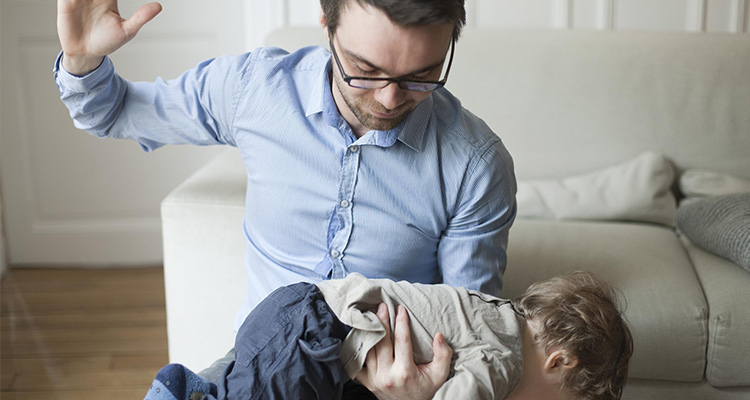
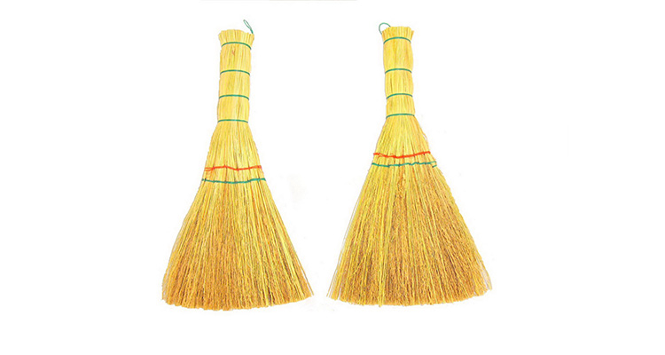
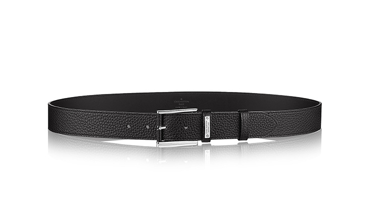
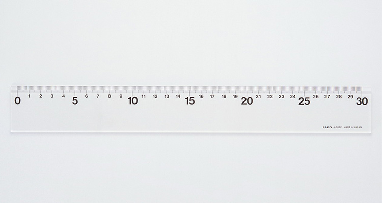
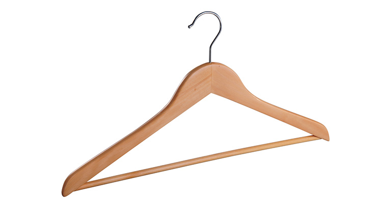
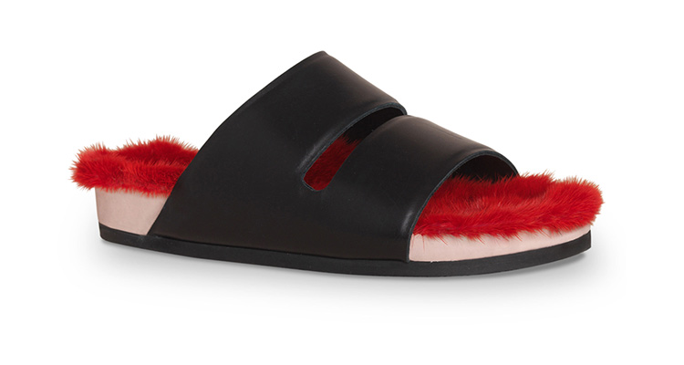
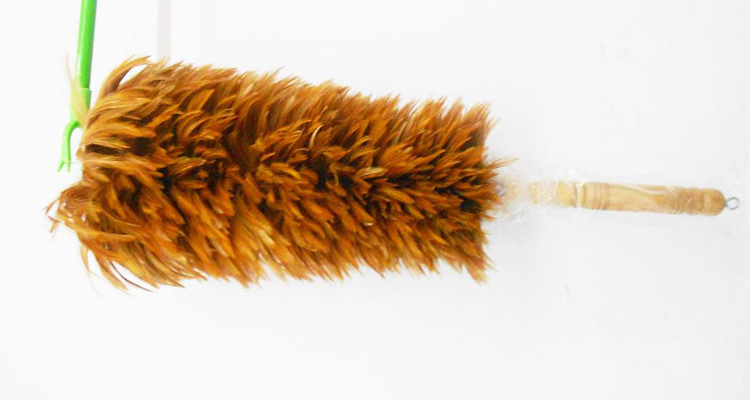
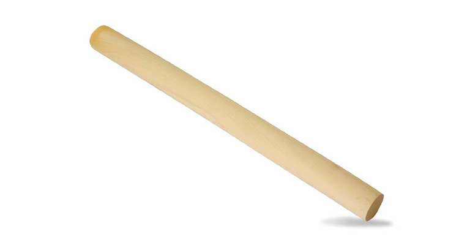
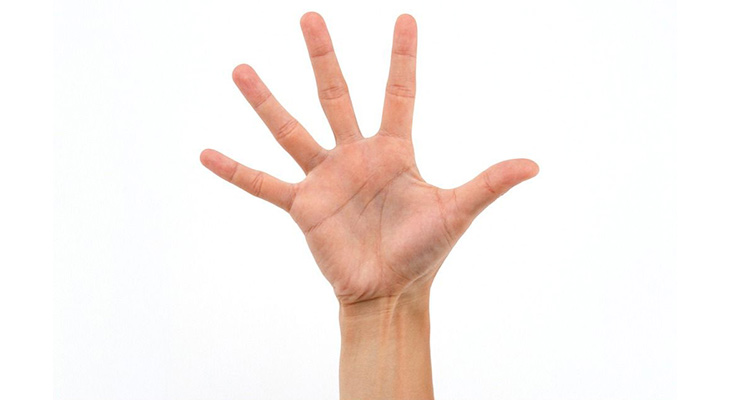
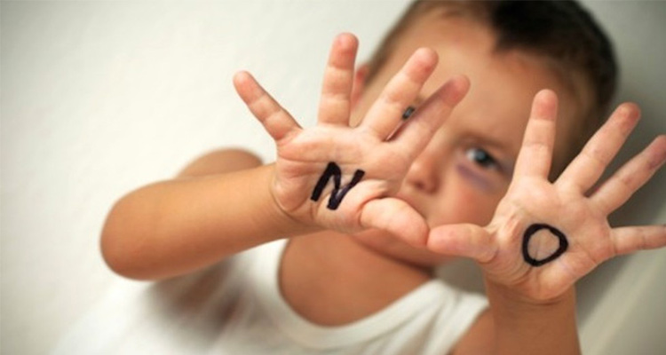

“三天不打，上房揭瓦”，“两天不骂，提拎甩褂”，每个挨过打的孩子可能都听过这两句“经典金句”！谁的童年不曾熊过？谁的童年没挨过打？还记得小时候挨打前老爸老妈说的话吗？在今天“国际不打小孩日”这个特别的日子里，来来来我们一起饱含着泪水来回忆：那些年，爸妈打你都用的什么工具？
1、信手拈来的武器：扫帚
2、随身携带的武器：腰带
3、富有教学意义的武器：尺子
4、家居属性满满的武器：衣架
5、小巧玲珑的武器：鞋底
6、最具恐吓力的武器：鸡毛掸子
7、杀伤力最强的武器：木棍
8、最常用的武器：手
在美国，尤其是在一些拉美、亚裔移民家庭以及是一些收入比较低，受教育程度比较低的黑人家庭，打孩子的现象相对于白人家庭来说还是比较普遍的，甚至存在严重的虐待等情况。正是因为美国的确存在虐待孩子的情况，美国儿童人权组织有效管理中心在发起了反对了体罚儿童的运动。1998年时，美国一个反体罚组织发起名为国际不打小孩日的活动，将每年的4月30日定为国际不打小孩日。
1、悲伤的回忆暂放一边，我们慢慢长大，有的也变成了爸爸妈妈，今天挨打的小孩，可能就是当初的你；
2、请多些倾听，多些耐心，别把“爱孩子”当作简单粗暴的借口。